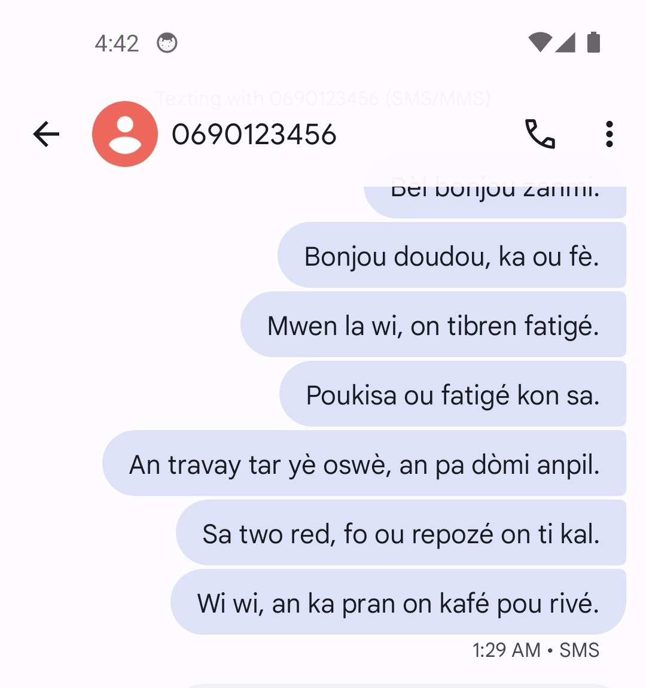
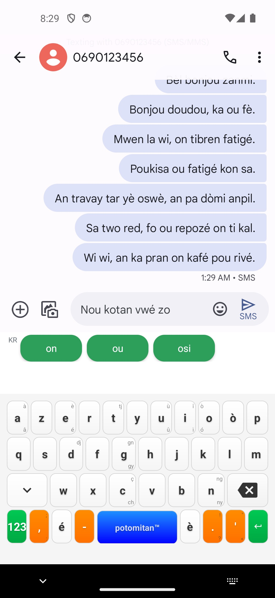
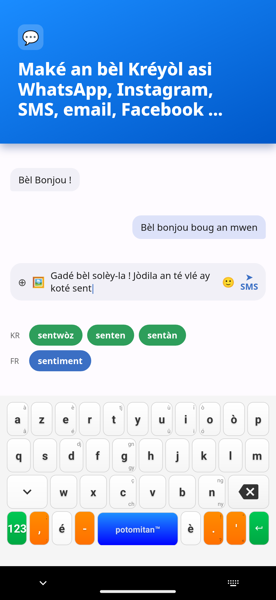
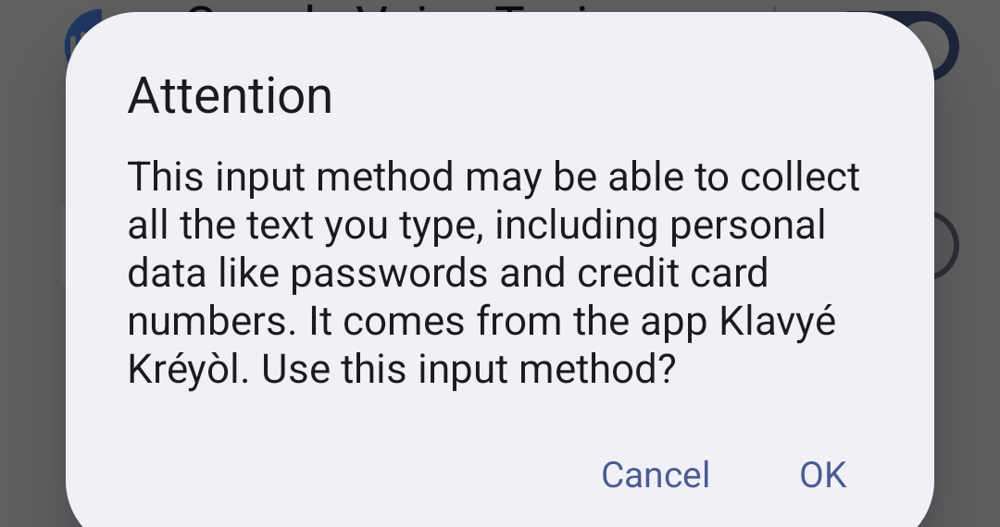
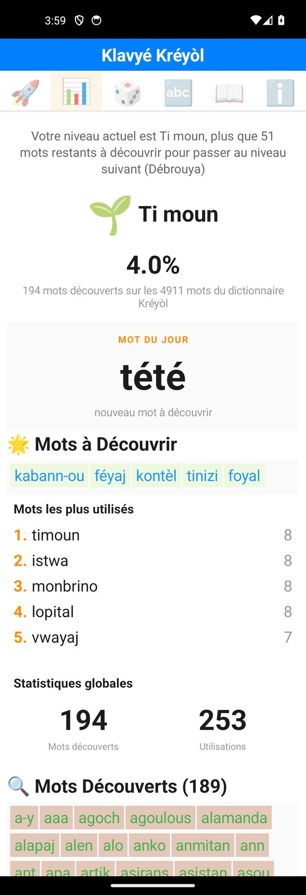

POTOMITAN™
« An kréyòl nou ka palé, an kréyòl nou ka maké ! »
Ce clavier s'appuie sur les textes de Sonny Rupaire, Sylviane Telchid, Max Rippon, Gisèle Pineau et d'autres grands défenseurs du kréyòl guadeloupéen : écrivains, linguistes et artistes qui ont structuré et transmis la langue.
Scanne · Télécharge
100%
gratuit zéro pub
gratuit zéro pub
Comment nous aider
- ⭐ Note l'app sur Google Play
- 📣 Parle-en autour de toi
- 🐛 Signale un mot manquant
Web potomitan.io
Kontak contact@potomitan.io
Klavyé Kréyòl Karukera est un projet citoyen, gratuit et open source (licence MIT), publié par Potomitan™. Zéro collecte de données personnelles : fonctionnement 100 % local.
Créé par un Guadeloupéen pour les Guadeloupéens · https://potomitan.io/
Pourquoi
Pourquoi un clavier créole ?
- 🛠️Si ton kréyòl est très rouillé…
- 😤Que tu galères à écrire en kréyòl parce que ton téléphone refuse tous les mots
- 🤔Que tu doutes de l'orthographe à chaque message…
- ➡️Klavyé Kréyòl Karukera est fait pour toi !


🎮 Et à l'intérieur : jeux de vocabulaire, accents créoles par appui long, progression en 7 niveaux. Retourne le dépliant pour tout découvrir !
Enfin écrire en kréyòl
sans galérer !
📺 Canal 10« Une application intuitive pour écrire en Kréyòl. »
📺 Guadeloupe la 1ère« Klavyé Kréyòl Karukera aide les utilisateurs à écrire leurs messages [en Kréyòl]. »
📰 France-Antilles« Le créole guadeloupéen dispose désormais de son premier clavier intelligent. »

Scanne pour téléchargerDisponible sur Google Play100% gratuit
C'est parti
Installation en 4 étapes
-
Télécharge l'app, c'est gratuit
Scanne ce codeVise-le avec l'appareil photo, ou cherche « Klavyé Kréyòl » sur Google Play
- Teste le clavier de démoOuvre l'app : un clavier d'essai te permet de taper « bonjou » et de voir les suggestions, sans rien activer.
-
Active le clavier dans les réglages
Un bouton dans l'app t'amène directement au bon écran des paramètres Android.

Ce message est normalAndroid l'affiche pour tous les claviers, pas seulement celui-ci - Choisis-le et écrisDe retour dans l'app, le sélecteur de clavier s'ouvre : choisis Klavyé Kréyòl et tape ton premier mot.

Fonctionnalités
Ce qu'il fait pour toi
- 💬Suggestions bilingues : le kréyòl d'abord, le français prend le relais si besoin
- ✒️Accents créoles (é, è, à, ò...) par simple appui long
- 🔤Il comprend même si tu te trompes d'accent ou de lettre
- 🧩Jeux de vocabulaire intégrés : mots mêlés, mots mélangés
- 🏆Progression en 7 niveaux, comme un jeu, de Pipirit à Potomitan


Le dictionnaire s'enrichit à chaque mise à jour, construit à partir des textes des grands défenseurs du kréyòl.
Motivation
Suis ta progression
Un tableau de bord suit les mots créoles que tu utilises et ta progression vers le niveau Potomitan, le sommet des niveaux de maîtrise.
🌍
🌱
🔥
💎
🐇
🐘
👑
PipiritPotomitan

Scanne pour téléchargerRejoins la communauté créolophone100% gratuit